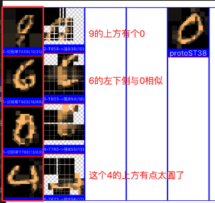
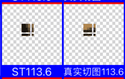
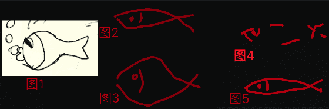
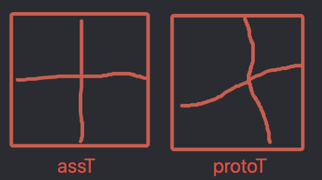

AI系列之《2026.06：递进淘汰、聚焦行为与视觉接入内核》

来源：HELIX_THEORY/手稿/assets/808_主辅层层过滤实践后回测初始效果.png

来源：HELIX_THEORY/手稿/assets/809_ST识别竞争支持GV的递进淘汰法初步回测.png

来源：HELIX_THEORY/手稿/assets/812_识别算法整体性迭代缘起图.png

来源：HELIX_THEORY/手稿/assets/813_尝试找出能最终体现整体的匹配方法图.png
来源：Note38.md
截至 2026 年 6 月，手稿集中在 MNIST 强训、废弃 GT 模块、ST 竞争的递进淘汰法、多轮循环聚焦行为，以及视觉与内核接洽。
递进淘汰法通过主辅先后、每层权重和识别策略调优，让竞争过程更有层次。多轮循环聚焦行为则把视觉注意力从算法技巧推进到行为闭环：系统先看粗略整体，再聚焦局部，再把局部结果反馈给内核继续思考。
“视觉与内核接洽”是这个阶段的收束点。视觉不再只是前端感知模块，而要进入思维循环，影响任务、候选、反思和行动。至此，2021 年底以来的 TC、Canset、反思、竞争机制，与 2025 年以来的视觉特征系统开始汇合。
阶段意义：视觉从识别模块走向认知循环，HELIX 的长期目标重新回到感知-思考-行动的一体化。